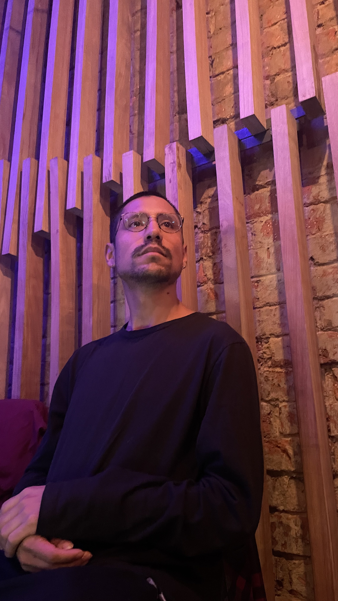
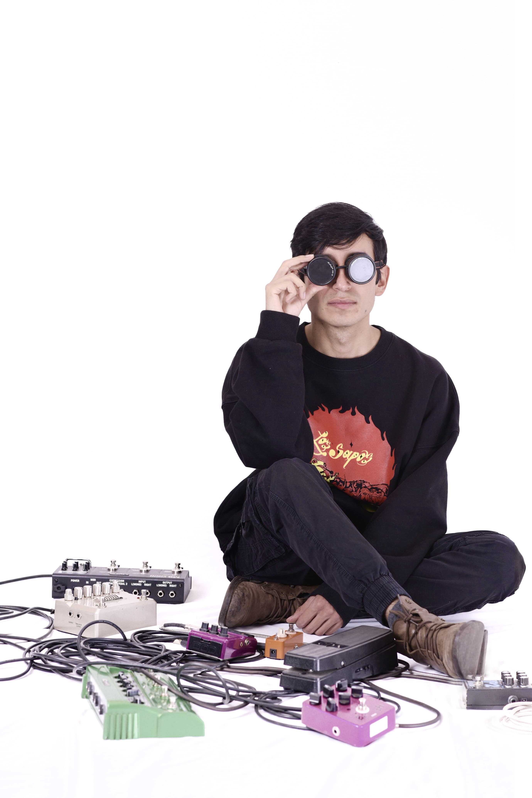
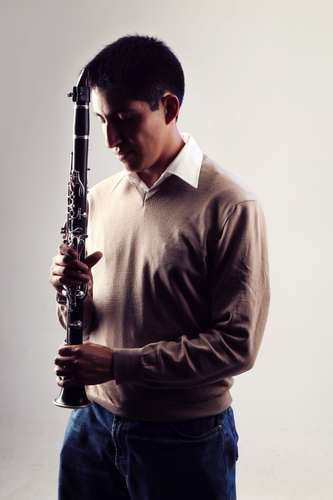

Mizky Bernal Miranda
- Nacionalidad: Boliviana
- Nacimiento: Enero 1991
- Instrumento: Piano
Mizky B. Bernal Miranda (Cochabamba, 1991) es compositora y artista sonora boliviana cuya práctica explora la escucha expandida, el territorio y la memoria. Obtuvo su licenciatura en Música de la Universidad Loyola en el año 2021 y posteriormente completó una Maestría en Arte Sonoro en la Universidad de Barcelona en el año 2024. Recibió su formación en dirección musical, composición y piano, de diferentes maestros de renombre nacional e internacional, en diferentes instituciones, cursos, talleres y seminarios. Como directora, participo como ayudante de dirección musical en la Orquesta de Cámara Compa (2015- 2016). Como intérprete, ha sido invitada por el Ensamble Maleza y actualmente es miembro del Ensamble Inmediato, con un trabajo centrado en la difusión de la música de vanguardia. Como intérprete, también participó en distintos eventos a nivel nacional e internacional, teniendo presentaciones en las Jornadas de Música Contemporánea desde el 2016 al 2023 Abaicam, el “Encuentro de Jóvenes Panistas 2016”, el Festival Boliviano de Música desde el 2021 al 2023, entre otras. En el año 2019 fue invitada a formar parte de la FIL La Paz, como expositora invitada sobre el tema “El problema de la composición”. En el año 2020 ganó la convocatoria Festival Mujeres en la Música Nueva como una de las 5 compositoras seleccionadas. Fue invitada en calidad de compositora, en el evento de Música Contemporánea Boliviana 2020 organizado por Casataller, en la ciudad de La Paz y en el Festival Boliviano de Música, en la ciudad de Santa Cruz. Desde el año 2020 hasta el 2022 pasó clases de creación musical con el maestro compositor Julio Estrada y programación musical con el Dr. Hugo Solís organizado por SUICREA y la UNAM. En el año 2021 participó en el Festival Boliviano de Música como compositora y como instrumentista, en la ciudad de Santa Cruz.
Desde el 2021 hasta la actualidad es parte del Ensamble Inmediato. En el año 2022 cursó un diplomado de Arte Sonoro otorgado por Tsonami Arte Sonoro-Chile. Fue seleccionada como compositora con su obra “ser sonoro” por el Ensamble XX-XXI- Argentina. Participó en el concierto Ecos palpitantes con su obra “constru-ir” presentado en Bogotá. Participó en la exposición Postales sonoras con su obra “ciudad rítmica” presentada en Veracruz. Como compositora invitada, se le convoco a colaborar con el conjunto mexicano Low Frequency Trio. Participó en las Jornadas virtuales de música contemporánea 2022 con su obra “Selva eléctrica” presentada en La Paz. Sus dos obras para piano “Para Aiva” compuesta en colaboración con la Inteligencia Artificial AIVA y que fueron seleccionadas en conmemoración a los 55 años de la Orquesta Sinfónica de Bogotá interpretadas por el pianista Sergei Sichkov.
Fue invitada en calidad de compositora para participar en la V edición de la Bienal internacional de Arte Sonoro organizado por Sonandes-2022, en la ciudad de La Paz. A comienzos del año 2023, tuvo lugar la presentación de su obra titulada "Entretejidos", la cual fue estrenada por la emisora radial Frrapó en Alemania y a comienzos del 2024 en la radio CKWU 95.9Fm radio Universitaria de Winnipeg. En el año 2023 colaboró con la Orquesta de Instrumentos Nativos (OEIN), donde presentó su composición "Con-ver-saciones". En el año 2023 su pieza “Tempestad” fue una composición comisionada por la Orquesta Sinfónica Nacional de Bolivia y la Orquesta de Instrumentos Nativos. En 2024 fue invitada a participar en el '1er Congreso Internacional de Estudios Musicales como compositora. A mediados de mayo organizó, junto a Ensamble Inmediato, un Taller de Micrófono Experimental y un concierto en el Ciclo de Música Contemporánea y Experimental Libres en el Sonido en Bogotá- Colombia. También fue seleccionada en la convocatoria de obras Latentes Iberoamericanas/+s, donde el Ensamble CG interpretó su pieza para trío de viento “Un recuerdo”. En 2025 fue seleccionada como compositora activa en el 5o International Workshop for Young Composers AntiquaNova (Argentina), la International Computer Music Conference Boston (Estados Unidos), el Ciclo Mujeres en el Bicentenario (Bolivia), y Darmstädter Ferienkurse (Alemania). Además, cuenta con proyectos comisionados entre América Latina y Europa que se desarrollarán durante este año.

Jorge Monroy
- Nacionalidad: Boliviana
- Nacimiento: Noviembre 1994
- Instrumento: Electrónica, guitarra, instrumentos tradicionales andinos
Jorge Monroy nació en La Paz en 1994 y se ha consolidado como un artista multidisciplinario que transita fluidamente entre diferentes lenguajes sonoros, estableciéndose como una figura innovadora en el panorama musical contemporáneo boliviano. Su trabajo compositivo se caracteriza por una búsqueda constante de nuevas formas de expresión que se sitúan en la intersección entre la música electrónica y la improvisación libre, dos géneros que le permiten explorar territorialidades sonoras inexploradas y desarrollar un lenguaje musical propio. Paralelamente, mantiene una profunda conexión con sus raíces culturales como intérprete de músicas tradicionales andinas de su región, lo que enriquece significativamente su perspectiva artística y le otorga una dimensión cultural única a su propuesta creativa, fusionando elementos ancestrales con tecnologías contemporáneas.
Su aproximación a la creación musical se distingue por una constante exploración de procesos innovadores de creación y reproducción sonora, investigando las posibilidades expresivas que emergen de la experimentación con diferentes medios y soportes. Una de las características más distintivas de su trabajo es la búsqueda de conexiones conceptuales y prácticas entre el formato tradicional del concierto y las posibilidades inmersivas de la instalación sonora, lo que le ha permitido desarrollar propuestas artísticas que trascienden las limitaciones convencionales de los géneros musicales. Esta visión interdisciplinaria refleja su interés por expandir los límites de la experiencia musical y crear nuevas formas de interacción entre el público, el espacio y el sonido, posicionándolo como un compositor que piensa la música desde una perspectiva espacial y conceptual ampliada.
El reconocimiento de su trabajo se evidencia en la interpretación de sus composiciones por parte de prestigiosas agrupaciones especializadas en música contemporánea y experimental, incluyendo el Ensamble Maleza, la Orquesta Experimental de Instrumentos Nativos, el Ensamble Inmediato y Reactio-lab, colectivos que han valorado la originalidad y calidad de su propuesta compositiva. Sus obras han sido presentadas en diversos escenarios de Bolivia y Colombia, consolidando su presencia en el circuito musical latinoamericano y demostrando la capacidad de su música para dialogar con audiencias de diferentes contextos culturales. Esta proyección internacional de su trabajo evidencia no solo la calidad artística de sus composiciones, sino también su capacidad para crear un lenguaje musical que trasciende fronteras geográficas y culturales, posicionándolo como un embajador de la nueva música boliviana en el ámbito continental.

José Camacho Cardozo
- Nacionalidad: Boliviana
- Nacimiento: Julio 1993
- Instrumento: Guitarra eléctrica, instrumentos tradicionales andinos
José Camacho Cardozo (La Paz, Bolivia - 1993) Compositor, guitarrista eléctrico y diseñador gráfico. Su música ha sido estrenada por distintos ensambles y solistas en América Latina y Europa, incluyendo la Orquesta Experimental de Instrumentos Nativos, el dúo UL y Félix Kroll; además de ser incluída en el disco “Latitudes, piezas breves para guitarra de compositores latinoamericanos”. Su interés se centra principalmente en la música experimental, de cámara y los medios mixtos. Fue ganador del Concurso Nacional de Composición “Hermann” en 2021, y de los Premios Plurinacionales “Eduardo Abaroa” en 2022. Como integrante del Ensamble Inmediato (colectivo de interpretación y composición de música experimental) ganó la I Convocatoria de Fomento a la Productividad Cultural y la Creación Artística del CRC en 2023; además de presentar talleres, conciertos e instalaciones sonoras en Bolivia y Colombia. Es miembro fundador de Latitudes, colectivo de compositores latinoamericanos de música contemporánea.
Se interesa también por la música popular y la música autóctona, habiendo sido parte del conjunto Muruqu (estudio e interpretación de músicas tradicionales andinas), Azorella (rock progresivo), y actualmente como guitarrista en Los Sapos (cumbia psicodélica). Participó en 5 publicaciones discográficas con estos últimos dos proyectos.
Su formación académica incluye clases regulares y cursos de composición con Javier Parrado, Miguel Ángel Rivera, Edgar Alandia, y Johann Hasler, entre otros. Fue estudiante de la Carrera de Composición en el Conservatorio Plurinacional de Música, y actualmente asiste al curso de titulación del Núcleo Integral de Composición (México).

Yerko Estevez Salazar
- Nacionalidad: Boliviana
- Nacimiento: Agosto 1994
- Instrumento: Guitarra, instrumentos tradicionales andinos
Yerko Estévez inició su formación musical formal estudiando guitarra eléctrica en el Conservatorio Plurinacional de Música entre los años 2014 y 2016. Posteriormente, profundizó sus conocimientos musicales al concluir sus estudios de composición en la reconocida Escuela de Composición de Casataller, una institución que le brindó la oportunidad de formarse bajo la tutela de destacados maestros internacionales. Entre sus mentores se encuentran figuras de renombre como Alessandro Perini de Italia, Alexander Grebtschenko de Alemania, Daniel Leguizamón y Rodolfo Acosta de Colombia, y Alberto Villalpando de Bolivia, quienes contribuyeron significativamente a su desarrollo como compositor. Complementó su formación académica cursando el Diplomado en Composición y Arreglos Musicales en la Universidad Pública de El Alto (U.P.E.A.).
Su compromiso con la música contemporánea lo llevó a participar activamente en diversos eventos y conferencias especializadas, incluyendo las prestigiosas "Conferencias de Música Contemporánea" del CCMC en Colombia, donde tuvo la oportunidad de intercambiar experiencias con otros compositores y músicos del ámbito latinoamericano. Asimismo, amplió sus horizontes participando en el taller multidisciplinario "Acústica Musical y Sonoridades" dirigido por el profesor Arnauld Girard, experiencia que enriqueció su comprensión de los aspectos técnicos y científicos del sonido. Su talento compositivo ha trascendido fronteras, logrando que sus obras sean estrenadas tanto en Alemania como en Colombia, consolidándose así como un compositor de proyección internacional.
Los reconocimientos a su trabajo creativo incluyen el segundo lugar en el "Concurso de Música Nueva" organizado por el Goethe-Zentrum Santa Cruz de la Sierra, así como una mención honorífica en el "Concurso de composición María Teresa Rivera de Stahlie", distinciones que avalan la calidad y originalidad de su propuesta compositiva. Más allá de su carrera como solista, Yerko Estévez ha demostrado su compromiso con el desarrollo de la escena musical boliviana como miembro fundador del "Conjunto de Moseñada La Nueva Sensación", agrupación que ha contribuido a la difusión y renovación de géneros tradicionales. Adicionalmente, es miembro fundador del CDIC (Colectivo de Improvisadores y Compositores), iniciativa que refleja su interés por fomentar la experimentación musical y la colaboración entre artistas contemporáneos, consolidándose como una figura influyente en el panorama musical actual de Bolivia.

Alejandro Flores
- Nacionalidad: Boliviana
- Nacimiento: Agosto 1994
- Instrumento:Clarinete
Tu biografía aquí...